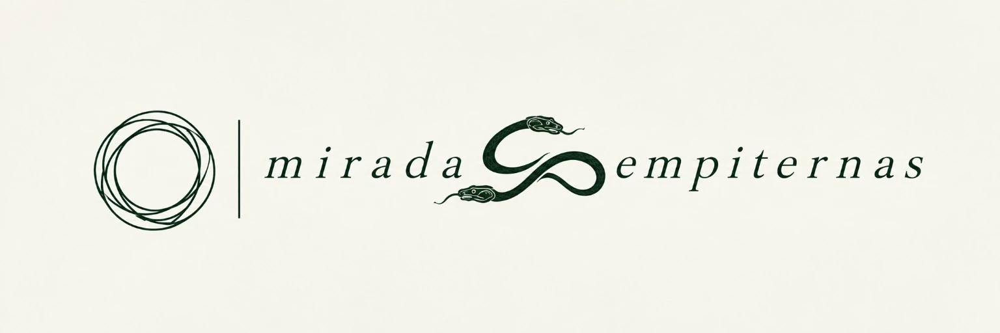
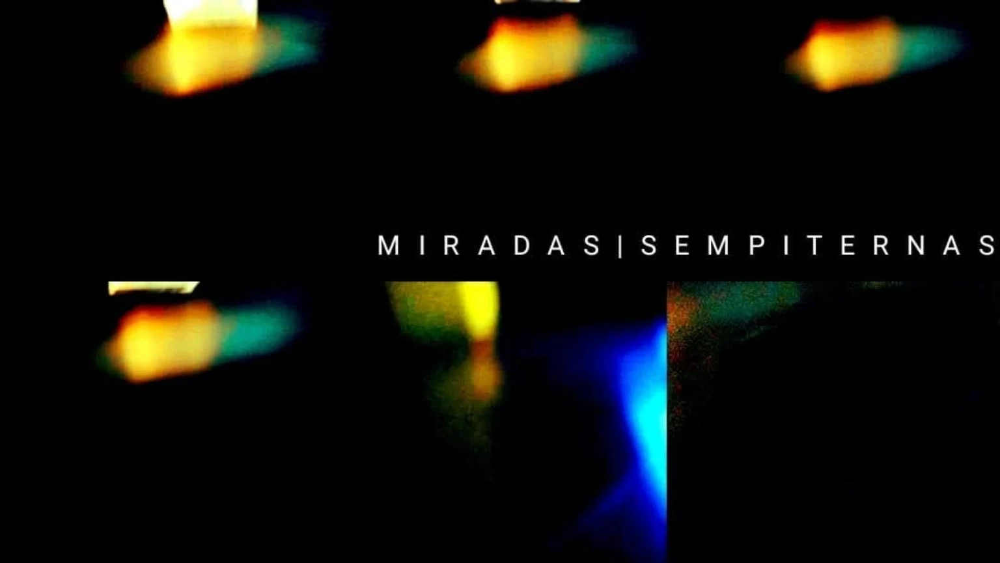

ARCHIVO CREATIVO / 01
Miradas
Sempiternas
Historias que merecen ser contadas. Imágenes que permanecen.
Miradas Sempiternas es la productora audiovisual de Irián Romero, un sello creativo que ha presentado varios de sus cortometrajes. Su propuesta reúne sensibilidad cinematográfica, búsqueda narrativa y experimentación visual.
HABLEMOS DE TU PROYECTO
Misión
Crear contenidos audiovisuales con identidad, sensibilidad estética y compromiso narrativo, capaces de comunicar ideas, provocar emociones y establecer vínculos significativos con el espectador.
Visión
Consolidar un espacio de producción independiente reconocido por su creatividad, rigor narrativo y capacidad para desarrollar propuestas audiovisuales originales y colaboraciones duraderas.
Lo que podemos crear
Del primer concepto a su expresión audiovisual, cada proyecto exige una mirada propia.
Cine y ficción
Desarrollo de propuestas narrativas, cortometrajes y proyectos cinematográficos.
Contenido audiovisual
Piezas audiovisuales para comunicar historias, ideas e identidades.
Guion y desarrollo
Investigación, conceptualización y escritura de contenidos narrativos.
Podcast y entrevistas
Formatos sonoros y audiovisuales construidos desde la conversación y el relato.
Una identidad que evoluciona
La imagen de una productora también cuenta su historia. Esta pieza conserva una etapa anterior de la identidad visual de Miradas Sempiternas y dialoga con su símbolo actual.

¿Tienes una idea en mente?
Cada proyecto comienza con una conversación. Cuéntanos qué imaginas, qué necesitas y cómo podemos darle forma juntos.
CONTACTAR / SOLICITAR INFORMACIÓN